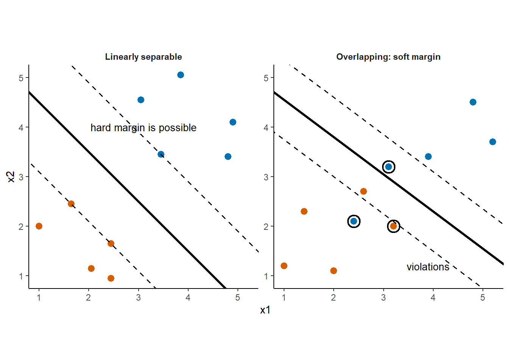
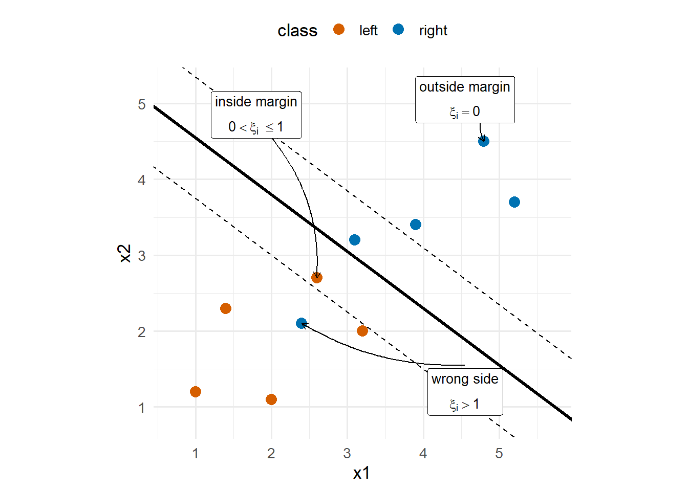
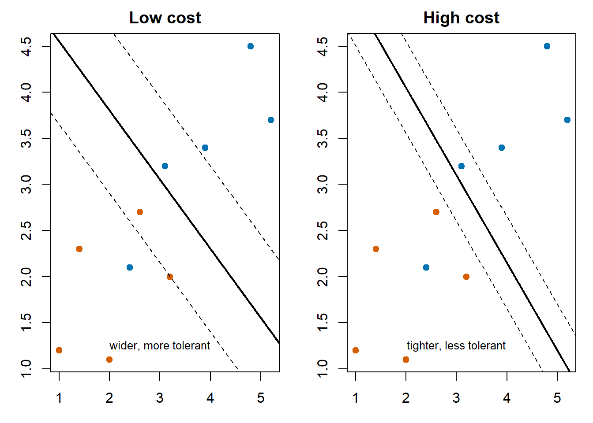
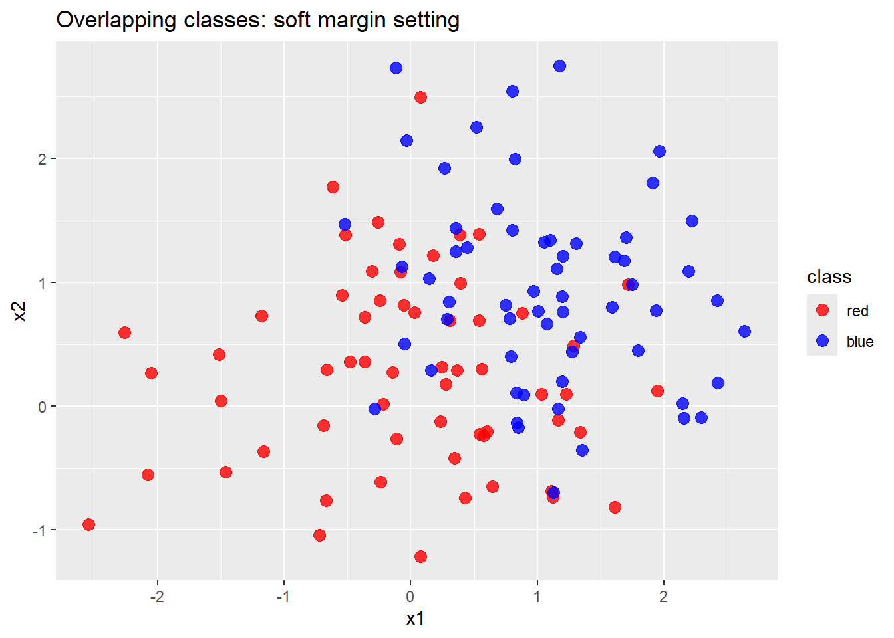
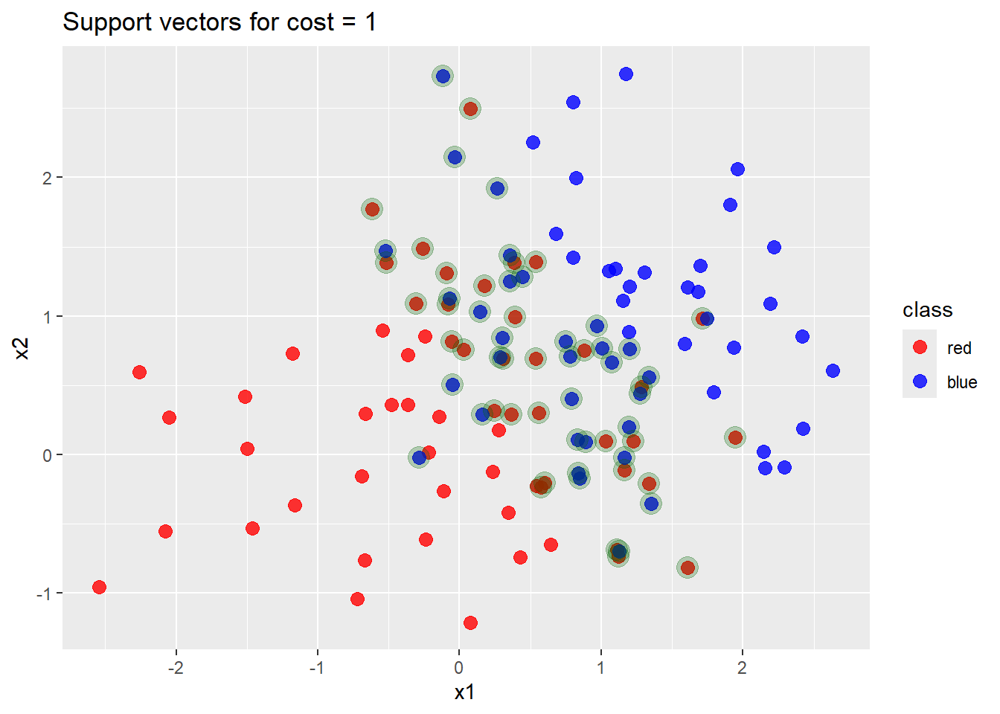
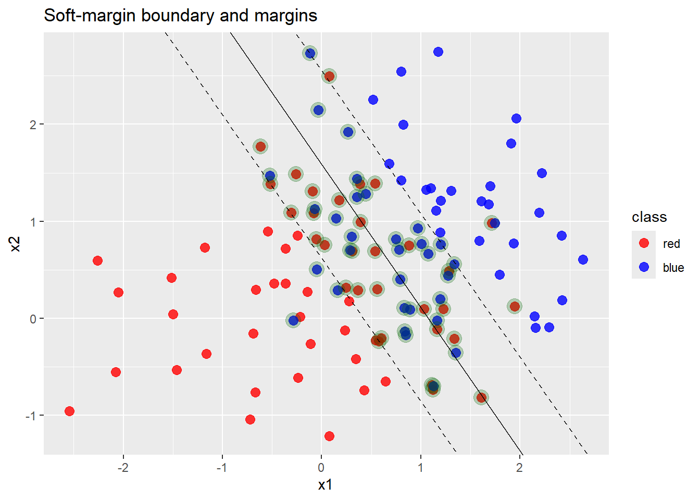
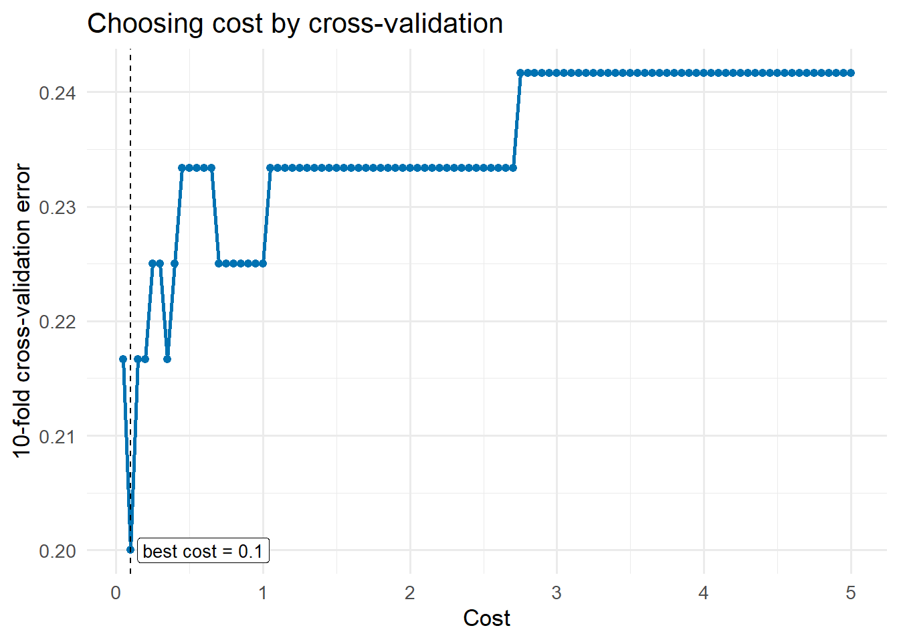

4 Soft Margin Classifier
The maximal margin classifier described in chapter 3 establishes the intuition and mechanics of the SVM approach under ideal classification problem. We require that:
- it is a binary classification problem,
- the classes of the training observations are perfectly separable with a linear function.
The first requirement for binary classification can be relaxed by considering multi-class classification as a collection of binary problems; however, this is beyond the scope of the course. The second requirement is subtly complex. From the previous 3D example, we saw that a problem can be inseparable in \(p\)-dimensions, but easily separable in \(p+1\)-dimensions. Whilst this can be helpful in many cases, it is counter-intuitive to start there.
Two classes may be linearly inseparable, their convex hulls overlap; but, only mildly, either by a few observations or a short distance. In these cases, it is not clear why an additional dimension is the correct approach. In fact, it seems easier to try and capture the classification problem as a whole, rather than chasing the potential noise of a few observations.
4.1 Perfect Separation Is Too Restrictive
Classification with real data is rarely perfectly separable, especially as complexity and variability increases. Even when the data is linearly separable, a margin can be supported by a single observation, causing the classifier to be very sensitive to noise. This is undesirable for a model which is designed to be a general classifier, one designed to avoid overfitting.
Not all is lost though; we do not need to change the entire machinery just yet. What if we consider a boundary that allows a few violations of the original machinery if it leads to a more stable and generalised classifier?
Such a classifier is known as a soft margin classifier, and because of this the maximal margin classifier is also known as a hard margin classifier.
Therefore, the goal of the classifier shifts slightly. We still want to create a classifier with the largest margin; however, we instead of…
classify every training point correctly at all costs,
it becomes…
allow some mistakes or margin violations if that gives a better overall boundary, and classifier.
We can describe a soft margin in words, but what about in mathematical language? We still need to optimise after all…
4.2 Slack Variables
From the above idea, we need a way to measure how badly a point violates the margin condition. For this purpose, we can introduce slack variables. Each observation in the training data has a corresponding slack variable which encode the following:
- a point outside the margin has no violation
- a point inside the margin has a positive violation
- a misclassified point has an even larger violation
Therefore, the slack variable provides a mechanism to both allow and penalise violations to the margin and boundary constraints, without breaking the underlying framework.
4.2.1 The Mathematics
Let us denote the slack variables by \(\xi_i \geq 0.\) \(\xi\) is another vector of unknowns which we need to optimise for, at the same time as \(\mathbf{w}\) and \(b\). We maintain our boundary condition
\[ \mathbf{w} \cdot \mathbf{x} + b = 0 \] but we need to reconsider the constraints. For the hard margin, we constrained our optimisation of \(\mathbf{w}\) and \(b\) with the linear constraints \[ y_i(\mathbf{w}\cdot\mathbf{x}_i + b) \geq 1, \qquad i = 1,\dots,n. \] That is, each observation must be correctly classified and lie beyond the margin. We want to relax this set of constraints with the slack variables.
Consider the constraint \[ y_i(\mathbf{w}\cdot\mathbf{x}_i + b) \geq 1 - \xi_i. \] There are three cases to explore whether this achieves our required relaxation.
These cases are illustrated by Figure 4.1 below.

At this stage, these penalties are only incorporated in the constraints to allow violation. They do not form part of the objective function of the optimisation yet, essentially letting the optimiser ignore the constraints by setting \(\xi_i\) almost arbitrarily. Let us remedy this by updating the objective function of the soft margin optimisation to
\[ \min_{b,w,\xi} \frac{1}{2}\lVert w \rVert^2 + C \sum_{i=1}^n \xi_i \] subject to
\[ y_i(\mathbf{w}\cdot\mathbf{x}_i + b) \geq 1 - \xi_i, \qquad i = 1,\dots,n \]
and
\[ \xi_i \geq 0, \qquad i = 1,\dots,n. \]
The objective function now has two competing components:
- \(\frac{1}{2}\lVert w \rVert^2\) wants a wide margin
- \(\sum \xi_i\) penalises violations
The balance between these two components is controlled by the cost parameter, \(C > 0\). This parameter operates in a similar way \(\lambda\) controls the balance in regression regularisation.
Hence, the soft-margin classifier is a balance between:
- keeping the boundary wide
- avoiding too many or too significant classification violations
As usual, balance is a fragile construct worth exploring.
4.3 The Cost Parameter
Let us take a closer look at the role of \(C\) in the objective function
\[ \frac{1}{2}\lVert w \rVert^2 + C \sum_{i=1}^n \xi_i. \]
The first term is from the hard margin case. Recall that the margin width which we want to maximise is proportional to \[\frac{1}{\lVert w \rVert}.\] Therefore, we can equivalently minimise \(\lVert w \rVert^2\). The second term penalises margin violations and misclassified observations. The cost parameter, \(C\), controls how strongly these violations are penalised relative to the desire for a wide margin.
A useful way to interpret \(C\) is:
High \(C\): violations are penalised heavily, hence the classifier tries harder to classify the training data without violations. This usually produces a narrower margin with lower bias and higher variance.
Low \(C\): margin violations are penalised lightly, implying that the classifier is more willing to accept observations inside the margin and even misclassification. This usually produces a wider margin with higher bias and lower variance.
Bias and variance in the above interpretations is making reference to the standard bias-variance tradeoff illustrated in Figure 4.2 below.

We see that a high cost may reduce training misclassification error; but, it reduces the generalisation of the model. Therefore, a lower cost classifier can perform better on new data because it is less sensitive to individual observations, capturing the data characteristics better.
This is the usual bias-variance tradeoff:
- if \(C\) is too small, the model is too forgiving and may underfit
- if \(C\) is too large, the model overfits to the noise.
As usual, the best value lies somewhere in the middle, and we estimate it using cross-validation.
4.3.1 Cross-Validation for Cost Tuning
Cross-validation gives a practical way to choose \(C\) whilst making efficient use of the available data.
We can easily incorporate SVMs into the cross-validation workflow:
- Choose a grid of candidate cost values.
- Split the training data into folds.
- For each cost, repeatedly fit on all but one fold and evaluate on the held-out fold.
- Average the held-out errors across folds.
- Choose the cost with the best average validation performance.
- Refit the final model on the full training data using that chosen cost.
Remember that cross-validation estimates generalisation error, not training error. Training error improves as the model becomes more flexible, but once the model starts to overfit, the validation performance reduces.
4.4 Support Vectors in the Soft Margin Case
The outstanding elephant in the room, the support vectors. How can we update the support vector machine without discussing the effect on the support vectors themselves? The support vectors support the boundary. In the hard margin case, they support the margin explicitly since they are the points which lie on the margins. But is it the same in the soft margin case?
Recall the support vectors are the points which directly affect the optimal boundary; therefore, it follows that the support vectors are now the observations that lie:
- exactly on the margin
- inside the margin
- or on the wrong side of the boundary
In the hard margin case, we related support vectors to those which corresponded to non-zero coefficients \(\alpha_i\) in the solution of \(\mathbf{w}\). The same result exists for the soft margin case. In particular, the form of the solution remains \[ \mathbf{w} = \sum_{i=1}^n \alpha_i y_i \mathbf{x}_i. \] Now \(0 \leq \alpha_i \leq C\) instead of \(\alpha_i \geq 0\). Recall that if \(\alpha_i > 0\) then \(\mathbf{x}_i\) actively constraints the boundary, making it a support vector. The additional information comes from whether \(\alpha_i = C\) or not. If so, then the corresponding observation is a violation; otherwise, the observation lies on the margin.
4.5 R Example: A Linear Overlap
We create an example which deliberately creates two overlapping classes. As a result, the hard-margin classifier is not appropriate here, and we are forced to explore the soft margin approach to the classification.
Let us begin by simulating such that there are two classes which overlap, preventing a clear linear separator.
Show data simulation code
library(ggplot2)
library(e1071)
set.seed(42)
n <- 120
# Two overlapping Gaussian clouds for a clean soft-margin example.
class0 <- data.frame(
x1 = rnorm(n / 2, mean = 0.0, sd = 0.85),
x2 = rnorm(n / 2, mean = 0.2, sd = 0.85),
class = factor("red", levels = c("red", "blue"))
)
class1 <- data.frame(
x1 = rnorm(n / 2, mean = 1.2, sd = 0.85),
x2 = rnorm(n / 2, mean = 1.0, sd = 0.85),
class = factor("blue", levels = c("red", "blue"))
)
dat <- rbind(class0, class1)
ggplot(dat, aes(x = x1, y = x2, color = class)) +
geom_point(size = 3, alpha = 0.8) +
scale_color_manual(values = c("red", "blue")) +
labs(title = "Overlapping classes: soft margin setting")
4.5.1 Fit Several Candidate Cost Values
Smaller cost values tolerate more margin violations whilst larger cost values are stricter towards violations and can reduce training error, but that does not automatically imply better out-of-sample performance.
Show cost comparison code
fit_with_cost <- function(cost_value) {
svm(
class ~ x1 + x2,
data = dat,
type = "C-classification",
kernel = "linear",
scale = FALSE,
cost = cost_value
)
}
model_low <- fit_with_cost(0.2)
model_mid <- fit_with_cost(1)
model_high <- fit_with_cost(20)
cost_models <- list(
"0.2" = model_low,
"1" = model_mid,
"20" = model_high
)
tab <- data.frame(
cost = c(0.2, 1, 20),
training_accuracy = unname(vapply(
cost_models,
function(model) mean(predict(model, dat) == dat$class),
numeric(1)
)),
support_vectors = c(
length(model_low$index),
length(model_mid$index),
length(model_high$index)
)
)
kableExtra::kable(tab)| cost | training_accuracy | support_vectors |
|---|---|---|
| 0.2 | 0.7833333 | 71 |
| 1.0 | 0.7916667 | 62 |
| 20.0 | 0.8000000 | 59 |
The training accuracy increases slightly as cost increases, but this is not enough to choose the model. A higher-cost model is being rewarded for fitting the training data more, potentially overfitting. We need cross-validation to check whether that fit generalises to out-of-sample data.
4.5.2 Inspect One Fitted Model
For the cost value \(C = 1\), we can inspect the training accuracy and the points that act as support vectors; obtaining a better understanding of what the SVM is doing.
Show support vector plot code
pred_mid <- predict(model_mid, dat)
sv_df <- dat[model_mid$index, ]
p <- ggplot(dat, aes(x = x1, y = x2, color = class)) +
geom_point(size = 3, alpha = 0.8) +
scale_color_manual(values = c("red", "blue")) +
labs(title = "Overlapping classes: soft margin setting")
p2 <- p +
geom_point(
data = sv_df,
aes(x = x1, y = x2),
inherit.aes = FALSE,
color = "darkgreen",
size = 5,
alpha = 0.25
) +
labs(title = "Support vectors for cost = 1")
p2
We can see that there are many support vectors spread around when using a soft margin classifier.
4.5.3 Draw the Boundary and Margins
The margin lines now act as a soft buffer. Some observations are allowed to fall inside the buffer or even on the wrong side.
Show boundary plot code
w <- as.numeric(t(model_mid$coefs) %*% model_mid$SV)
slope <- -w[1] / w[2]
intercept <- model_mid$rho / w[2]
p3 <- p2 +
geom_abline(slope = slope, intercept = intercept) +
geom_abline(slope = slope, intercept = intercept + 1 / w[2], linetype = "dashed") +
geom_abline(slope = slope, intercept = intercept - 1 / w[2], linetype = "dashed") +
labs(title = "Soft-margin boundary and margins")
p3
4.5.4 Tune the Cost Parameter
The tune.svm() function is recommended here because it makes the cross-validation process simple.
Show tune.svm code
set.seed(123)
tuned <- tune.svm(
class ~ x1 + x2,
data = dat,
kernel = "linear",
cost = seq(0.05, 5, by = 0.05),
tunecontrol = tune.control(cross = 10)
)
tuning_results <- tuned$performances
kableExtra::kable(data.frame(
best_cost = tuned$best.parameters$cost,
best_cross_validation_error = tuned$best.performance
))| best_cost | best_cross_validation_error |
|---|---|
| 0.1 | 0.2 |
The table above gives the tuned cost value. The curve below is usually more informative because it shows whether the choice is sharp or whether several nearby values perform similarly.
Show cross-validation curve code
ggplot(tuning_results, aes(x = cost, y = error)) +
geom_line(color = "#0072B2", linewidth = 1) +
geom_point(color = "#0072B2", size = 1.8) +
geom_vline(xintercept = tuned$best.parameters$cost, linetype = "dashed") +
annotate(
"label",
x = tuned$best.parameters$cost,
y = min(tuning_results$error),
label = paste("best cost =", tuned$best.parameters$cost),
hjust = -0.05,
size = 3.5
) +
labs(
x = "Cost",
y = "10-fold cross-validation error",
title = "Choosing cost by cross-validation"
) +
theme_minimal(base_size = 13)
4.5.5 Takeaway
The soft-margin classifier is the practical version of the maximal margin idea:
- it keeps the margin principle
- it tolerates imperfect separation
- it introduces a tradeoff balancing parameter, cost
- cross-validation is used to tune the cost